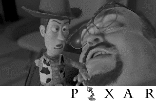

Backdrop Images from Toy Story 2, and Other Pixar Shorts
This is a collection of backdrop images I put together based on the Toy Story 2 trailer and other images on the web, designed to be used with Avi's Backdrop for the Newton MessagePad 2000, 2100, and Emate 300 only.
Download the Images
There are nine images altogether. Stored on the Newton, each takes up between 9K and 28K. Download them all as Pixar.sit. Or download each individually as Newton packages by clicking on the images below.
